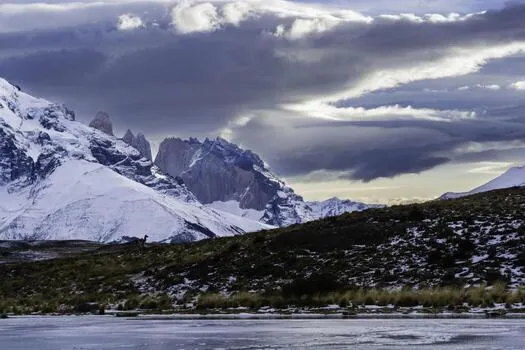
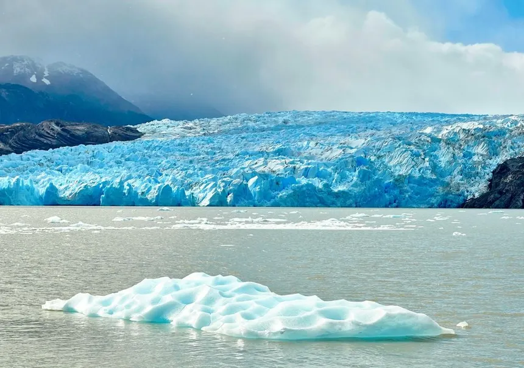

El comienzo del viaje
Este verano tuve la oportunidad de viajar a la Patagonia argentina, una experiencia que sin duda voy a recordar toda mi vida.
El viaje comenzó con muchas expectativas, ya que siempre quise conocer el sur del país y sus paisajes únicos.

Actividades realizadas
Durante el viaje realicé varias actividades al aire libre. Una de las que más me gustó fue el trekking, ya que me permitió recorrer senderos y ver paisajes increíbles desde distintos puntos.
También visité parques nacionales, donde pude observar la naturaleza en su estado más puro. Los glaciares fueron una de las cosas que más me impactaron, tanto por su tamaño como por lo imponentes que se ven en persona.
Además, aproveché para conocer un poco más sobre la cultura del lugar, la comida típica y la forma de vida de las personas que viven en esa región.

Conclusión
En general, fue una experiencia muy positiva que volvería a repetir sin dudas. La Patagonia es un lugar único, ideal para desconectarse de la rutina y disfrutar de la naturaleza.
Me llevé muy buenos recuerdos del viaje y aprendí a valorar más este tipo de experiencias. Sin dudas, es un destino que recomendaría a cualquier persona que tenga la oportunidad de visitarlo.
En el futuro me gustaría volver para seguir conociendo otros lugares del sur que no llegué a visitar en este viaje.